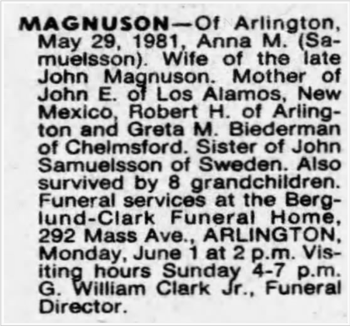

Född 1893-08-13 i Nyhem, Trästen, Vislanda (G) 4 .
Död 3 december 1978 i Arlington Heights, Massachusetts, USA 5 .
|
Född
18 september 1896
i Elnaryd, Vislanda, Kronoberg, Sverige
1
2
3
.
Död 29 maj 1981 i Arlington Heights, Massachusetts, USA |
 |
|
*Anna Martina Magnuson
Född 18 september 1896 i Elnaryd, Vislanda, Kronoberg, Sverige 1 2 3 . Död 29 maj 1981 i Arlington Heights, Massachusetts, USA |
F
Samuel Kommunalnämndsordförande Johannesson.
Född 24 december 1856 i Elnaryd, Vislanda, Kronoberg, Sverige Död 26 mars 1929 i Elnaryd, Vislanda, Kronoberg, Sverige |
||
|
M
Ingrid Svensdotter.
Född 18 januari 1862 i Värmanshult, Vislanda, Kronoberg Död 17 april 1917 i Elnaryd, Vislanda, Kronoberg, Sverige |
|||
|
Relation med
John Magnusson.
Född 1893-08-13 i Nyhem, Trästen, Vislanda (G) 4 . Död 3 december 1978 i Arlington Heights, Massachusetts, USA 5 . |
 Född
13 november 1929
i Arlington Heights, Massachusetts, USA
6
1
7
3
.
Född
13 november 1929
i Arlington Heights, Massachusetts, USA
6
1
7
3
.
Framställd 2026-09-21 med hjälp av Disgen version 2025.